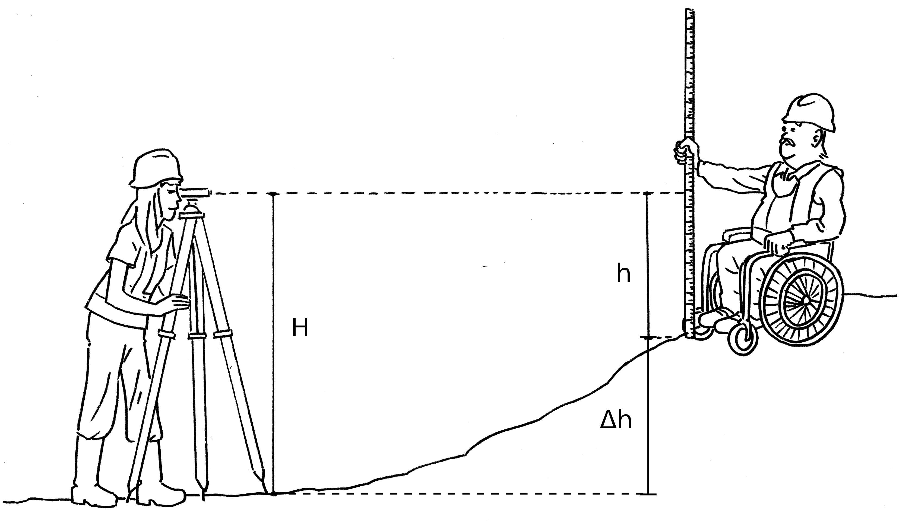
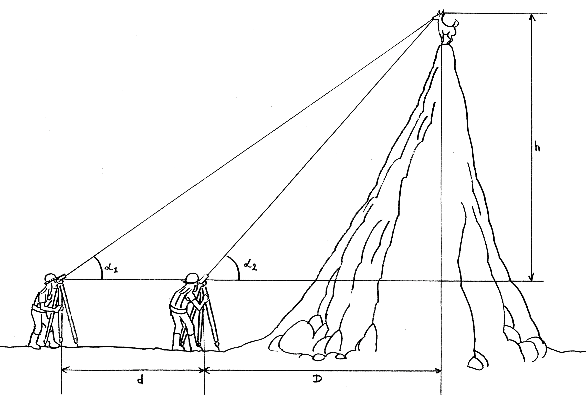
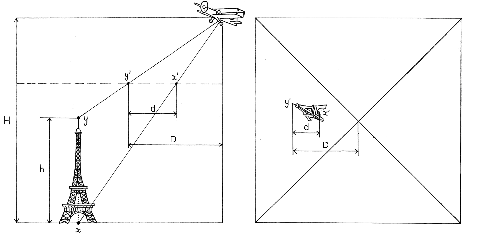
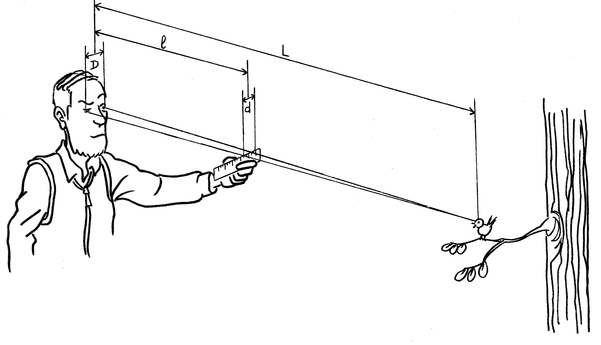
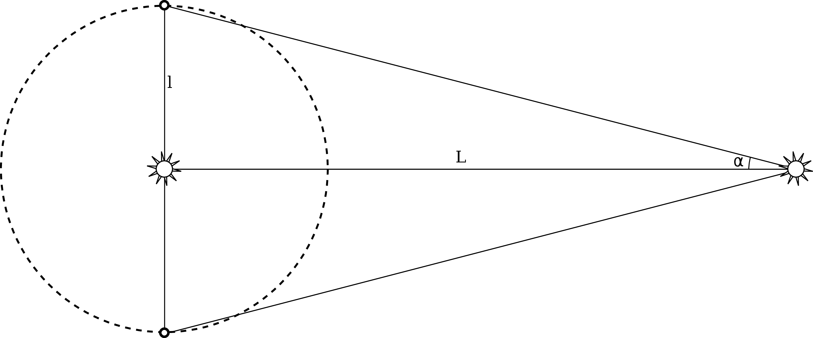
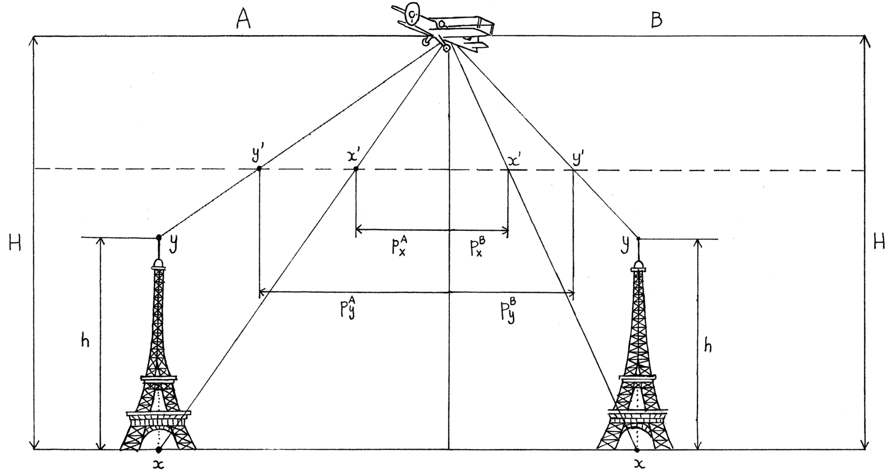
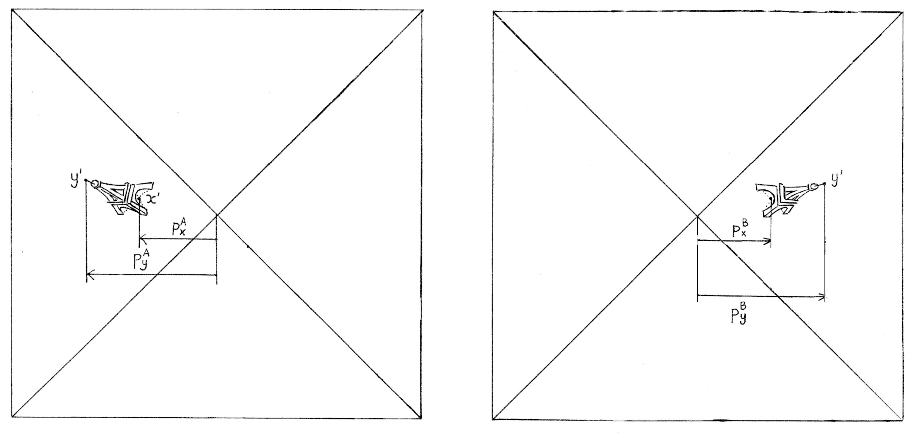
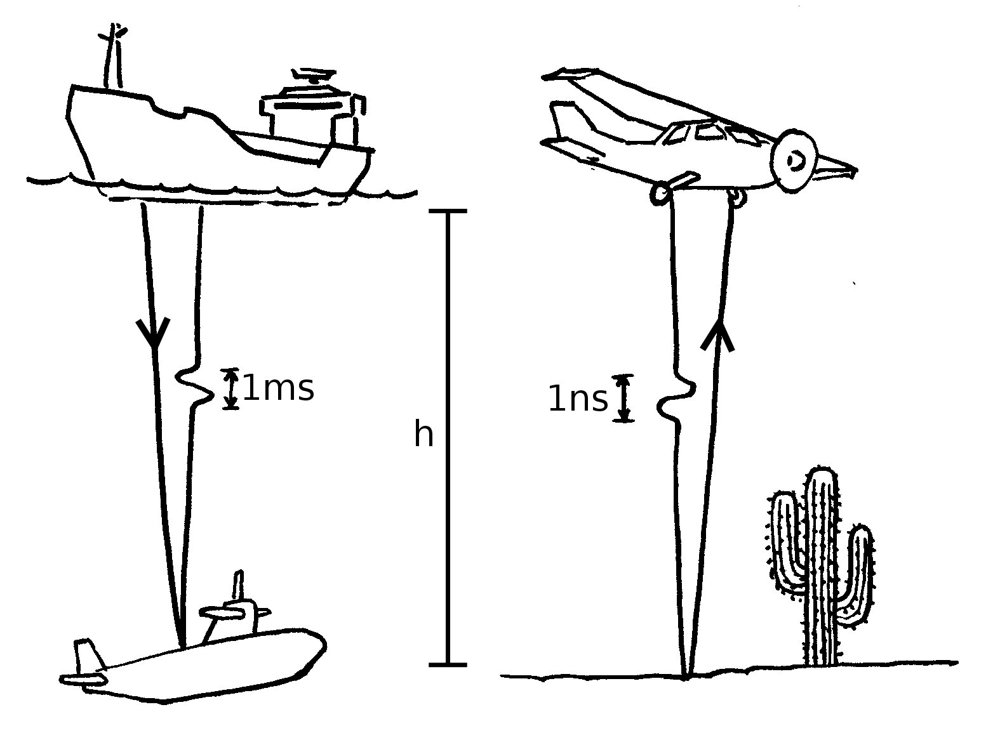
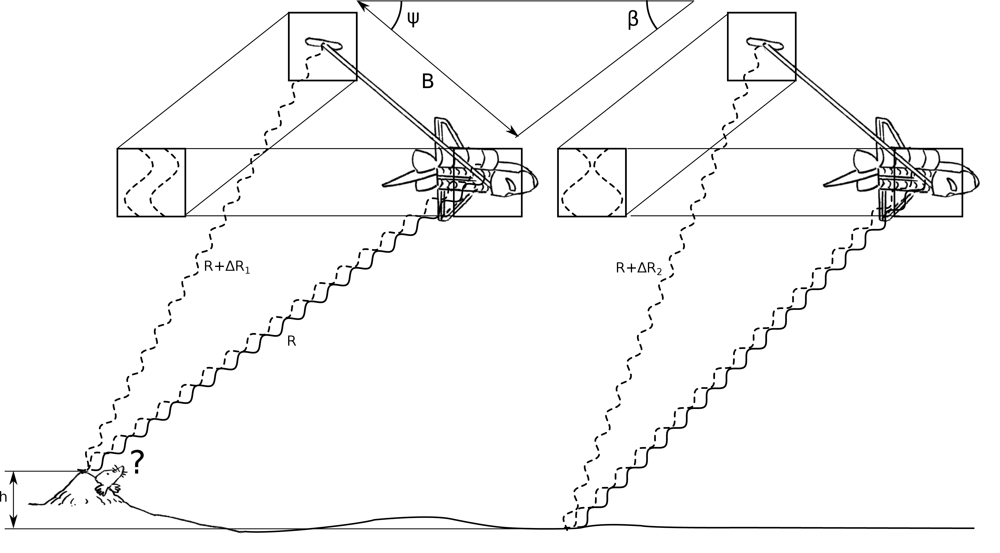

As the name suggests, geomorphology (geo = Earth, morpho = form) is a field of science concerned with understanding the Earth’s topography. Topographic maps and Digital Elevation Models (DEMs) are therefore essential tools for geomorphological research. In this session, we will review the most common techniques to measure topography, using either land-based observations (Section 1) or remote sensing (Sections 2-4).
The methods introduced in this section can be carried out at low cost by ground-based individuals.
This type of survey requires:
The elevation difference between two points can be mapped by precisely measuring the vertical distance along a measuring rod held at some distance from the level (Figure 1). The survey is typically done along a closed loop, beginning and ending at the same bench mark. To estimate the precision of the resulting elevations, we simply divide the mismatch between the start and the end of the loop by the number of measurements in the survey.

Differential levelling is very effective in areas of relatively gentle topography. However, topographic slopes of greater than 5% result in impractically small horizontal steps. This limitation can be overcome by using a theodolite to precisely measure angles to the horizontal over long distances (Figure 2). Looking at the same distant object from two different locations separated by a known horizontal distance, their viewing angles will differ due to the parallex effect (see Section 2.2). Let α1 be the viewing angle relative to the horizontal plane at location 1 and α2 the viewing angle at location 2. Let D and h be the unknown horizontal and vertical distances, respectively, from location 2 to the point of interest, and (D + d) the horizontal distance from location 1. Then
| h = D tan(α2) = (D + d) tan(α1) | (1) | |
| ⇒ D [tan(α2) − tan(α1)] = d tan(α1) | (2) | |
| ⇒ D = d tan(α1) ∕ [tan(α2) − tan(α1)] | (3) | |
| ⇒ h = d tan(α1) tan(α2) ∕ [tan(α2) − tan(α1)] | (4) |

exercise:
You stand on a level beach and look up to the edge of a cliff above. The viewing angle is 60∘. Stepping back 10 m, the viewing angle reduces to 50∘. How high is the cliff?
Water is an incompressible fluid, and so its pressure (P) increases linearly with depth (z):
| (5) |
where ρ is the density of water (∼ 1 kg/l) and g is the gravitational constant (∼9.81 m/s2). Scuba-divers use Equation 5 to determine the depth of their dives. Likewise, mountaineers can use air pressure to determine elevation (h). However, because air is a compressible fluid, they cannot use Equation 5, but must employ a different formula:
| (6) |
where P∘ is the pressure at sea level (∼ 1013.25 mbar) and 8435 is the e-folding length of the exponential function, in metres. Using Equation 6, we can calculate that the air pressure on the summit of Mount Makalu (close to 8435m high) is approximately 2.71 (= e) times lower than at sea level. One problem with barometric elevation surveys is the variability of P∘, which can range from 980 mbar (low pressure, bad weather) to 1050 mbar (high pressure, good weather), potentially resulting in up to
| (7) |
metres of variability in ‘apparent elevation’. It is therefore important to calibrate the barometer to the elevation of a bench mark before (and after) a barometric survey.
The Global Positioning System (GPS) measures the horizontal and vertical location of GPS receivers relative to a constellation of satellites. The positional accuracy is greatly improved by monitoring the relative distances (both horizontally and vertically) relative to a fixed GPS receiver, located at a known location (e.g. a bench mark). This is called differential GPS and has allowed geodesists to monitor plate tectonic movements with millimetre accuracy and precision.
Levelling surveys are restricted to individual point measurements or profiles. The following methods overcome this limitation and cover large continuous areas using photographs, taken from above.
It is possible to obtain the height of vertical objects such as trees, buildings or cliff faces from a single aerial photograph (Figure 3). Define the principal point of an aerial photograph as the point located directly below the airplane. Let D be the measured horizontal distance on the photograph from the principal point to the top of the object of interest, and let d be the measured distance on the photograph between its base and its top. Finally, let H be the height of the airplane above the ground. Then the height of the object can be calculated as
| (8) |

exercise:
Estimate the height of the cooling towers shown in aerial photograph B at the end of these notes, which was taken at an altitude of 1000m.

Single images can only be used to measure vertical objects. This limitation can be overcome by using two images taken at different locations, and utilising the parallax effect (see Section 1.2). To illustrate this effect, carry out the following experiment (Figure 4):
Then we can calculate the distance from your eyes to the chosen object as
| (9) |
The same principle is used by astronometers to measure the distance (L) from the Earth to other planets and nearby stars (Figure 5), using the diameter of Earth’s orbit around the Sun as a baseline (l) and the apparent angle from the baseline to the object of interest as a parallax angle (α):
| (10) |

exercise:
A parsec is the physical distance to a celestial object for which α = 1 arc second in Equation 10. Given
that light travels from the Sun to Earth in 8 minutes and 20 seconds, how many light years does one
parsec equal to?
Given a stereo-set of two aerial photographs (or satellite images), we can determine the elevation distance between any two points x and y (not just those located immediately above or below each other) as follows:
Calculate the parallax of points x and y as
| px = px(A) − px(B) | (11) | |
| py = py(A) − py(B) | (12) |
If the images were taken at an altitude H, then the elevation difference between points x and y is given by
| (13) |


Topographic contour maps are created by connecting points of equal parallax on a stereo-image, using
a parallax bar.
exercise:
Calculate the height of the cooling towers (last page of these notes) using the principles of stereo-photogrammetry, again assuming that the photographs were taken at an altitude of 1000m.
Lidar stands for ‘LIght Detection And Ranging’ and is based on similar principles to sonar (‘SOund Navigation And Ranging’) and radar (‘RAdio Detection And Ranging’). It determines elevation (h) by measuring the two-way travel time (Δt) of short light pulses between an airborne light source and the ground (Figure 7):
| (14) |
where v is the speed of light (∼ 3 ×108m/s). Two-way travel times can be measured with a precision of ∼ 1 ns. Can you work out the vertical resolution of Lidar?

During 11 days in February 2000, space shuttle Endeavor carried out the Shuttle Radar Topography Mission (SRTM). Using a radar (microwave) source and two detectors separated by a distance of 60 m, it circled the Earth, recording the interference patterns of the reflected light (Figure 8). The resulting data went through several stages of post-processing, ultimately resulting in a Digital Elevation Model (DEM) with near-global coverage and a horizontal resolution of 30m. The data are available free of charge at http://srtm.csi.cgiar.org/
